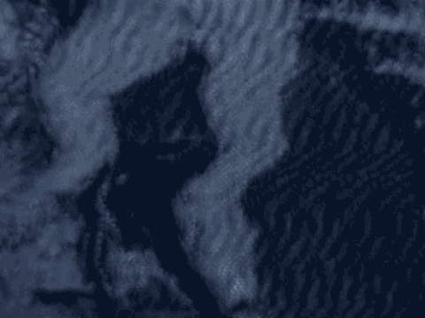

6 THE COURT: The government contends.
7 MR. COHN: Well, then it should be reflected with our
8 contention that it was rebutted.
9 THE COURT: I wonder whether, you know, the suggested
10 language was that the defendant has introduced the SAM and
11 whether that's --
12 MR. COHN: I'm justing looking, the government's
13 contention, if you are putting contentions --
14 THE COURT: As to the second non-statutory --
15 MR. FITZGERALD: First.
16 THE COURT: As to the -- yes, as to the first
17 non-statutory aggravating factor, the government contends that
18 Al-'Owhali poses a continuing and serious threat even though
19 he will be imprisoned for life. Al-'Owhali contends that he
20 will be subject to rigorous security (the special
21 administrative measures), and will, therefore, not constitute
22 a threat. The government contends that, despite these
23 measures, the threat will be present. It is for you to decide
24 whether the defendant would or would not pose a continuing and
25 serious threat.
7290
1 The special administrative measures are not
2 automatically applied, but are applied in accordance with
3 their provisions.
4 Is there an exhibit number? Should I have that?
5 MR. COHN: It's Defense Al-'Owhali --
6 THE COURT: Is that an exhibit they have asked for?
7 MR. FITZGERALD: No, Judge.
8 MR. BAUGH: They have not asked for the exhibit.
9 MR. COHN: They haven't asked for that exhibit.
10 THE COURT: Let me read this again: As to the first
11 non-statutory aggravating factor, the government contends that
12 Al-'Owhali poses a continuing and serious threat even though
13 he will be imprisoned for life. Al-'Owhali contends that he
14 will be subject to rigorous security (the special
15 administrative measures), and will, therefore, not constitute
16 a threat. The government contends that, despite these
17 measures, the threat will be present. It is for you to decide
18 whether the defendant would or would not pose a continuing and
19 serious threat.
20 The special administrative measures are not
21 automatically applied, but are applied in accordance with
22 their provisions.
23 MR. COHN: If your Honor please, which have been
24 submitted as Al-'Owhali Exhibit R.
25 THE COURT: Al-'Owhali Exhibit R.
7291
1 MR. FITZGERALD: Your Honor, I believe it is R. If
2 we're going to reference the Al-'Owhali exhibit, which is a
3 regulation, I think we should also reference the stipulation
4 concerning the government's response to that regulation, which
5 is 2281.
6 THE COURT: Why don't I say Al-'Owhali Exhibit R and
7 stipulation --
8 What's the number?
9 MR. FITZGERALD: 2281.
10 THE COURT: -- 2281 deal with these issues.
11 Let me read it again: As to the first non-statutory
12 aggravating factor, the government contends that Al-'Owhali
13 poses a continuing and serious threat even though he will be
14 imprisoned for life. Al-'Owhali denies that he constitutes
15 such a threat and contends that he will be subject to rigorous
16 security (the special administrative measures), and will,
17 therefore, not constitute a threat.
18 No, that's redundant.
19 The government contends that, despite these measures,
20 the threat will be present. It is for you to decide whether
21 defendant Al-'Owhali would or would not pose a continuing and
22 serious threat.
23 The special administrative measures are not
24 automatically applied, but are applied in accordance with
25 their provisions. Al-'Owhali Exhibit R and Stipulation 2281
7292
1 deal with these issues.
2 Is that acceptable?
3 MR. COHN: Yes.
4 MR. FITZGERALD: Yes.
5 THE COURT: All right. I will put that in legible
6 form and we'll send it in to the jury.
7 This has let us know exactly where they are in the
8 Special Verdict Form.
1